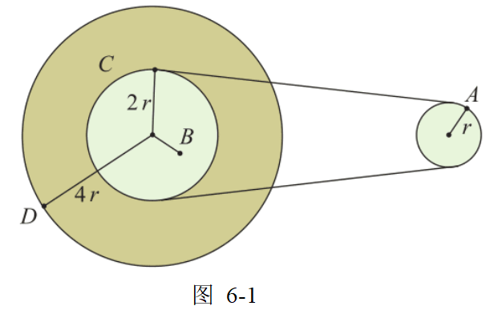
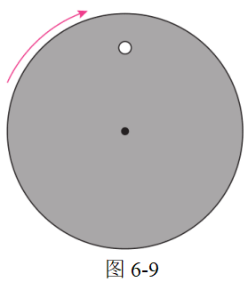
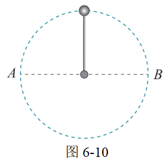
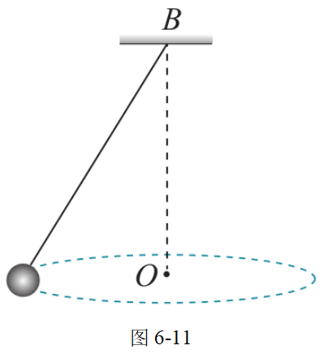
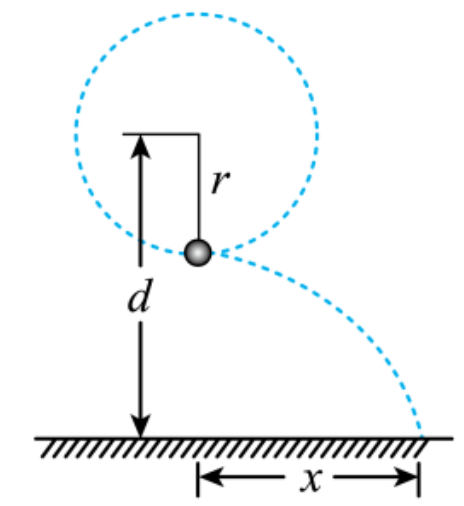
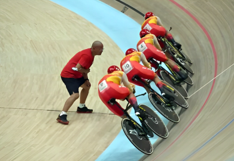
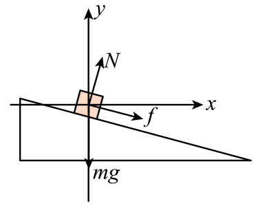

第六章 圆周运动 复习与提高
A组
1．请根据加速度的特点，对以下七种运动进行分类，并画出分类的树状结构图：匀速直线运动；匀变速直线运动；自由落体运动；抛体运动；平抛运动；匀速圆周运动；变速圆周运动。
参考解答：略
2．图 6-1 是一皮带传动装置的示意图，右轮半径为 r，A 是它边缘上的一点。左侧是一轮轴，大轮半径为 4r，小轮半径为 2r。B 点在小轮上，到小轮中心的距离为 r。C 点和 D 点分别位于小轮和大轮的边缘上。如果传动过程中皮带不打滑，那么 A、B、C、D 点的线速度、角速度、向心加速度之比分别是多少？

参考解答：
v_A : v_B : v_C : v_D = 2 : 1 : 2 : 4，
\omega_A : \omega_B : \omega_C : \omega_D = 2 : 1 : 1 : 1，
a_A : a_B : a_C : a_D = 4 : 1 : 2 : 4。
3．在空间站中，宇航员长期处于失重状态。为缓解这种状态带来的不适，科学家设想建造一种环形空间站，如图 6-2 所示。圆环绕中心匀速旋转，宇航员站在旋转舱内的侧壁上，可以受到与他站在地球表面时相同大小的支持力。已知地球表面的重力加速度为 g，圆环的半径为 r，宇航员可视为质点，为达到目的，旋转舱绕其轴线匀速转动的角速度应为多大？
参考解答：
\omega = \sqrt{\frac{g}{r}}。
4．如图 6-3 所示，长 L 的轻杆两端分别固定着可以视为质点的小球 A、B，放置在光滑水平桌面上，杆中心 O 有一竖直方向的固定转动轴，小球 A、B 的质量分别为 3m、m。当轻杆以角速度 \omega 绕轴在水平桌面上转动时，求转轴受杆拉力的大小。
参考解答：
转轴受杆拉力的大小为 m\omega^2 L。
5．如图 6-4 所示，滚筒洗衣机脱水时，滚筒绕水平转动轴转动。滚筒上有很多漏水孔，滚筒转动时，附着在潮湿衣服上的水从漏水孔中被甩出，达到脱水的目的。如果认为湿衣服在竖直平面内做匀速圆周运动，那么，湿衣服上的水是在最低点还是最高点时更容易甩出？请说明道理。
参考解答：
水在最低点更容易甩出。此时水的离心力需克服分子间作用力和重力，而最低点分子作用力更大，但离心趋势更明显。
6．波轮洗衣机中的脱水筒（图 6-5）在脱水时，衣服紧贴在筒壁上做匀速圆周运动。某洗衣机的脱水转速为 600 \, \text{r/min}，脱水筒直径为 300 \, \text{mm}。若一质量 m = 6 \, \text{g} 的硬币被甩到桶壁上随桶转动，求桶壁对它的静摩擦力和弹力的大小。（g = 10 \, \text{m/s}^2）
参考解答：
静摩擦力 f = 0.06 \, \text{N}，弹力 N = 3.55 \, \text{N}。
7．如图 6-6 所示，半径为 R 的半球形陶罐固定在水平转台上，转台以角速度 \omega 匀速转动。一质量为 m 的小物块落入陶罐内，随罐一起转动且相对静止时，摩擦力为 0，与 O 点连线夹角 \theta = 60^\circ。求转台转动的角速度。
参考解答：
\omega = \sqrt{\frac{g}{R \cos\theta}} = \sqrt{\frac{2g}{R}}。
B组
1．如图 6-7 所示，半径 R = 0.40 \, \text{m} 的光滑半圆环轨道竖直放置，小球从 A 点冲上轨道，从 B 点飞出后落在 C 点。（g = 10 \, \text{m/s}^2）
（1）小球在 B 点的最小速度是多少？
（2）A、C 间的最小距离是多少？
参考解答：
（1）v_{\text{min}} = 2 \, \text{m/s}；
（2）d_{\text{min}} = 0.8 \, \text{m}。
2．如图 6-8 所示，质点做匀速圆周运动，时间 t 内由 A 运动到 B，圆心角为 \theta。
（1）若 AB 弧长为 l，求向心加速度大小；
（2）若速度改变量大小为 \Delta v，求向心加速度大小。
参考解答：
（1）a_n = \frac{l^2}{r t^2}；
（2）a_n = \frac{\Delta v^2}{4r}。
3．如图 6-9 所示，带有一白点的黑色圆盘，绕过其中心且垂直于盘面的轴沿顺时针方向匀速转动，转速n = 20 r/s。在暗室中用每秒闪光21次的频闪光源照射圆盘，求观察到白点转动的方向和转动的周期。

参考解答：
白点呈逆时针转动，周期为 1 \, \text{s}。
4．如图 6-10 所示，轻杆一端固定质量为 m 的小球，在竖直平面内以角速度 \omega 匀速转动。

（1）求小球在最高点时杆的作用力；
（2）求小球在水平位置 A 时杆的作用力。
参考解答：
(1)因转动的角速度大小未知，故小球在最高点时，杆对球的作用力F_{1}方向不能确 定。假设F_1的方向竖直向下。
根据F_1+mg=m\omega^2l解得F_1= m ( \omega ^2l- g) .
- 若\omega>\sqrt{\frac gl} ,杆对小球的拉力大小为F_1= m ( \omega ^2l- g) ,方向竖直向下。
- 若\omega=\sqrt{\frac{g}l} ,F_1=0,杆对小球恰好无作用力。
- 若 \omega < \sqrt {\frac {\sqrt {g}}l},杆对小球的支持力大小为F_1= m ( g- \omega ^2l) ,方向竖直向上。
(2)小球运动到水平位置 A 处时，
- 杆对球的竖直方向分力F_y=mg,
- 水平方向分力F_x=m\omega^2l,
- 故杆对球的作用力大小 F_2=\sqrt{F_{\mathrm{x}}^2+F_{\mathrm{y}}^2}=\sqrt{m^2\omega^4l^2+m^2g^2} 。
设该作用力与水平方向夹角为\theta,
则有 tan\theta = \frac {F_\mathrm{y} }{F_\mathrm{x} }= \frac {mg}{m\omega ^2l} = \frac g{\omega^2l} .
5．如图 6-11 所示，小球在水平面内做匀速圆周运动，绳长为 l，角速度为 \omega。

（1）求绳的拉力 F；
（2）若圆心到悬点距离 h 不变，求 \omega 与 l 的关系；
（3）求拉力 F 与 l 的关系。
参考解答：
（1）F = m\omega^2 l；
（2）\omega 与 l 无关；
（3）F \propto l。
力的三角形与绳长、半径、高度三角形相似
\frac{mg}h=\frac{F_T}l=\frac{m\omega^2R}R
根据上述关系很快得到结论。
6．质量为 m 的小球在竖直平面内做圆周运动，绳在最低点断裂后水平飞出，落地水平距离为 d。

（1）求绳能承受的最大拉力；
（2）求使水平距离最大的绳长及最大距离。
参考解答: (1)\frac{11}{3}mg (2)绳长为\frac d2 ,最大水平距离为\frac{2d}{\sqrt{3}}
【详解】(1)设绳断时球速度为\upsilon,做平抛运动飞行时间为t,有
d=\nu t \frac34d^2=\frac12gt^2 得
v=\sqrt{\frac{2gd}3}
设最大拉力为F,绳断时，有
F-mg=m\frac{v^2}{\frac d4}
解得 F=\frac{11}3mg
(2)设绳长为r,绳断时球速度为v_1,做平抛运动飞行时间为t_1,球平抛时有
\begin{aligned}&x=v_1t_1\\&h=d-r=\frac12gt_1^2\end{aligned}
绳能承受的最大拉力不变，有
F-mg=m\frac{\nu_1^2}r
解得 解得
x=\frac{4\sqrt{3}}3\sqrt{r\left(d-r\right)}
可知，当绳长r=\frac d2时球抛出的水平距离最大:
x=\frac{2\sqrt{3}}3d
7．如图 6-12 所示，自行车在倾斜 15^\circ 的圆形赛道上匀速圆周运动。

（1）若不受摩擦力，求速度 v；
（2）若速度 v' = 18 \, \text{m/s}，求摩擦力大小及方向。
参考解答：
【答案】(1) 12.7 m/s; (2) 263 N, 方向沿着倾斜路面指向内侧 【详解】(1)设人和自行车的总质量为m,若不受摩擦力作用则由重力和支持力的合力提供向心力，根据牛顿第二定律可得
mg\tan\theta=\frac{mv^2}R
解得
v=\sqrt{gR\mathrm{tan}\theta}=\sqrt{10\times60\times0.27}m/s\approx12.7m/s
(2)当自行车速为
\begin{aligned} & \nu^{\prime}=18\mathrm{m/s}>12.7\mathrm{m/s} \\ & \text{此时重力和支持力的合力不足以提供向心力,斜面对人和自行车施加沿斜面向下的静摩擦力,} \\ & \text{其受力分析如图所示} \end{aligned}
根据牛顿第二定律可得：在y轴方向
Ncos\theta=mg+f\sin\theta
在x轴方向
f\cos\theta+N\sin\theta=\frac{mv^{\prime2}}R 联立解得:
f\approx263.8N
注：公式已转换为 LaTeX 格式，图片引用需补充实际路径。部分题目解析为简化版，完整推导可参考原文档。